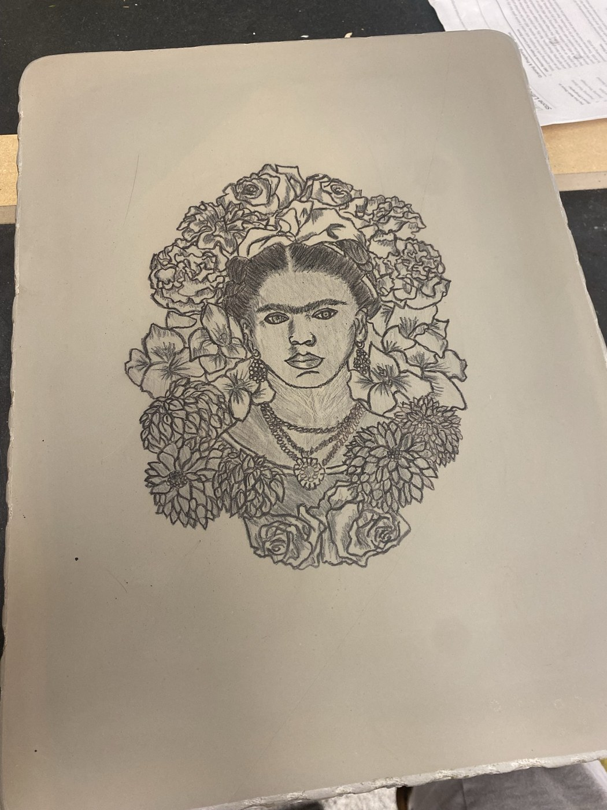
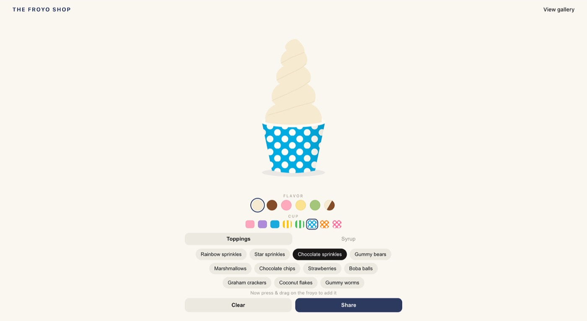

scratch me!
Scratch Art
Personal Project · Fall 2026

Frida Litho
A lithograph I made for my printmaking class

The Froyo Shop
Build and share your own frozen treat
Paros, Greece
A church I photographed on the island